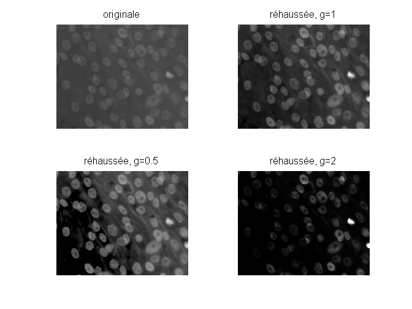
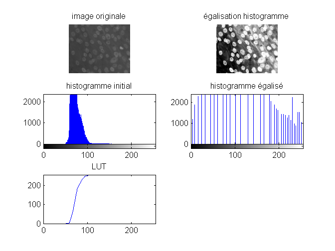
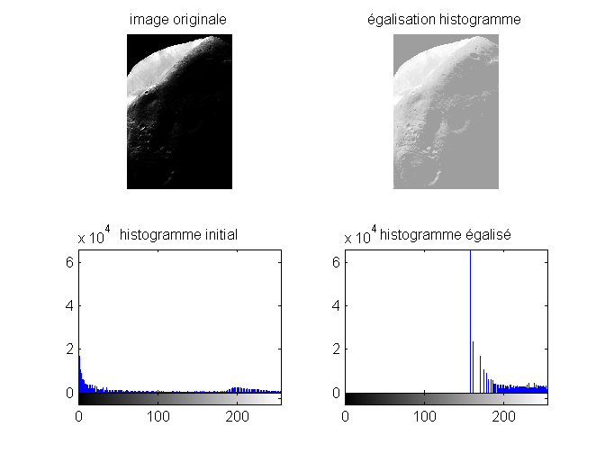
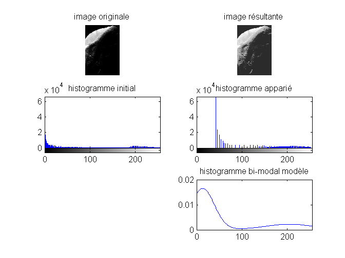

CORRECTION TP REHAUSSEMENT - OPTION I&S
Contents
0 - Nettoyage
clear all;close all;clc
1 - Transformations d'intensités
lecture et visualisation de l'image A;
A=imread('osteoblaste.tif'); A=double(A); A=A/255; % transformations gamma figure subplot(2,2,1);viewImage(A);title('originale'); Ar=imadjust(A,[min(min(A)) max(max(A))],[0 1],1); subplot(2,2,2);viewImage(Ar);title('réhaussée, g=1'); Ar=imadjust(A,[0.25 0.75],[0 1],0.5); subplot(2,2,3);viewImage(Ar);title('réhaussée, g=0.5'); Ar=imadjust(A,[0.25 0.5],[0 1],2); subplot(2,2,4);viewImage(Ar);title('réhaussée, g=2'); % étirement de contraste m=mean(mean(A)); figure subplot(2,2,1);viewImage(A);title('originale'); Ar=1./(1+(m./(A+eps)).^5); subplot(2,2,2);viewImage(Ar);title('contraste étiré : E=10'); Ar=1./(1+(m./(A+eps)).^10); subplot(2,2,3);viewImage(Ar);title('contraste étiré : E=20'); Ar=1./(1+(m./(A+eps)).^1000); subplot(2,2,4);viewImage(Ar);title('contraste étiré : E=1000');

2 - Egalisation d'histogramme
égalisation d'histogramme
A=imread('osteoblaste.tif'); Ar=histeq(A); figure subplot(3,2,1);viewImage(A);title('image originale'); subplot(3,2,2);viewImage(Ar);title('égalisation histogramme'); subplot(3,2,3);imhist(A);title('histogramme initial'); subplot(3,2,4);imhist(Ar);title('histogramme égalisé'); hnorm = imhist(A)./numel(A); cdf=255.*cumsum(hnorm); subplot(3,2,5);plot(1:1:256,cdf);title('LUT'); axis([0 255 0 255]);
3 - Appariement d'histogramme
égalisation d'histogramme
A=imread('phobos.tif'); %A=double(A); Ar=histeq(A,256); figure subplot(2,2,1);viewImage(A);title('image originale'); subplot(2,2,2);viewImage(Ar);title('égalisation histogramme'); subplot(2,2,3);imhist(A);title('histogramme initial'); subplot(2,2,4);imhist(Ar);title('histogramme égalisé'); % histogramme modèle p=twomodegauss(0.05,0.1,0.8,0.2,0.04,0.01,0.002); % appariement Ar=uint8(histeq(A,p)); figure subplot(3,2,6);plot(p);title('histogramme bi-modal modèle'); xlim([0 255]) subplot(3,2,1);viewImage(A);title('image originale'); subplot(3,2,2);viewImage(Ar);title('image résultante'); subplot(3,2,3);imhist(A,256);title('histogramme initial'); subplot(3,2,4);imhist(Ar,256);title('histogramme apparié'); 
4 - Fonctions annexes
readfile('twomodegauss.m') readfile('viewImage.m')
Undefined function 'readfile' for input arguments of type 'char'.
Error in script_enhancement (line 70)
readfile('twomodegauss.m')